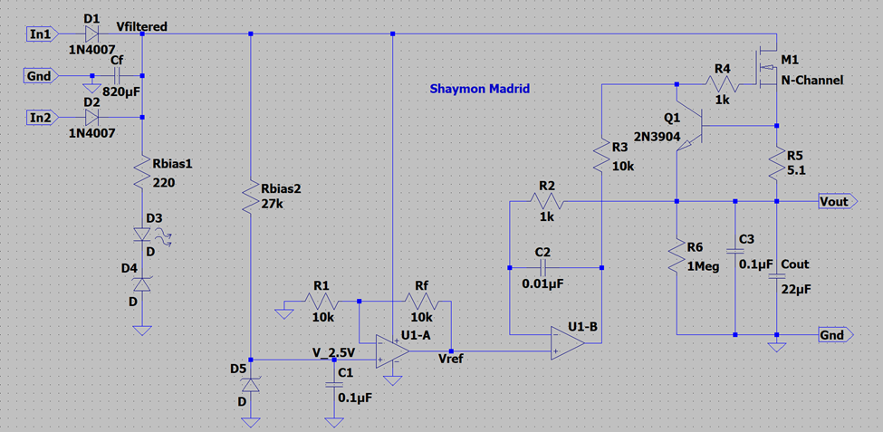

5V DC Power Supply Project
This project is a simple 5V DC power Supply built during the ECEN 350 course at BYU-Idaho.
What it does
This project is a simple 5V DC power supply that can provide stable voltage output for varying loads. We were given the option of choosing an output voltage in the range of 2.5V - 9V. I chose a target voltage of 5V since it is a common voltage for many electronic devices, however, this will not have the current output necessary for powering a large device. It assumes an input voltage of 21V and gives a consitant output voltage of 5V with various loads attatched to it.
Tools / Technologies
- LT Spice
- Resistors
- Capacitors
Images


Documentation
Below are links to documentation such as reports and assignments relating to this project from the course: